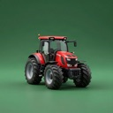
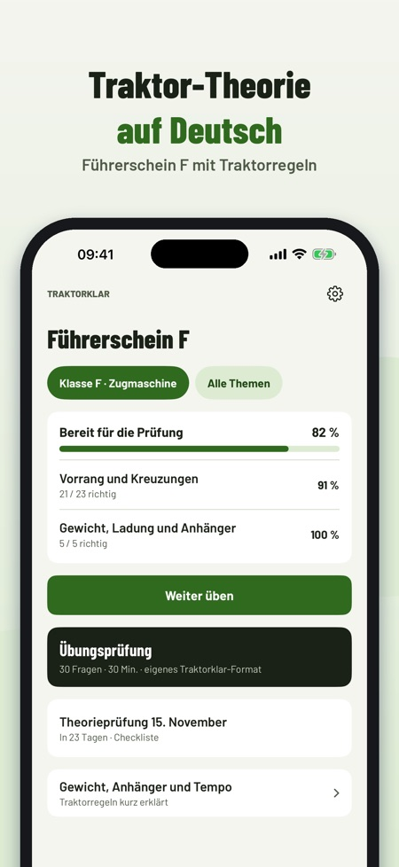
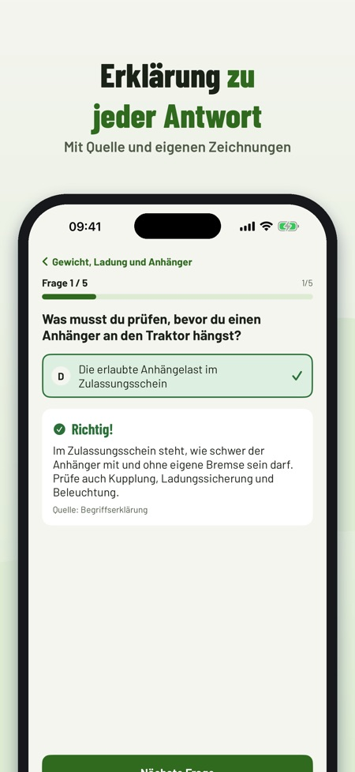
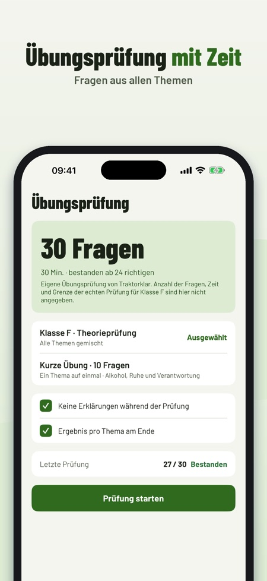

Traktor-Theorie für Österreich. Übe die Theorie für den Führerschein F: Fragen mit Erklärung, Prüfungssimulation und Regeln zu Gewicht, Anhänger und Tempo – offline.



Traktorklar hilft dir, die Theorie für den Führerschein F (Zugmaschinen) in Österreich zu üben – mit Traktorregeln, nicht mit Autoregeln.
20 Fragen, die Begriffe und die Checkliste kannst du ohne Kauf nutzen. Die Vollversion ist ein Einmalkauf und schaltet alle Fragen, Simulationen und die Statistik frei. Kein Abo.
Traktorklar ist unabhängig und nicht mit Behörden oder Fahrschulen verbunden. Die Prüfung legst du bei der Führerscheinbehörde ab.